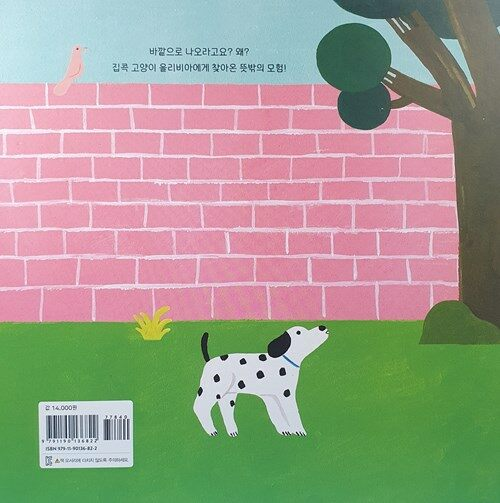
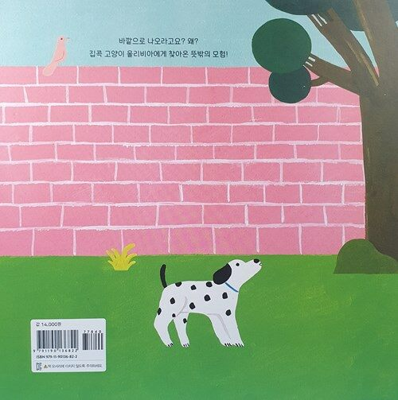

용감한 고양이 올리비아
마리안나 코포 지음 / 권이진 옮김
 

2022.08.26. 출간 / 41쪽 / 255*245mm / 양장 / 유아 그림책
어린이의 도전을 가만히 응원하는
다정하고 따스한 그림책
올리비아는 모험가예요. 지칠 줄 모르는 여행가이자, 두려움 없는 탐험가이기도 해요. 아주 귀여운 아니, 용감한 고양이지요. 그런데 올리비아는 집 밖에 한 번도 나가 본 적이 없대요. 꼭 밖에 나가야만 즐거운 건 아니잖아요? 재미있는 장난감도, 올리비아를 아끼는 사람들도 모두 집 안에 있어요. 그리고 바깥세상이 멋지다고들 하지만, 글쎄요, 올리비아가 보기엔 그렇지만도 않아요. 거긴 상상력이 하나도 없는 고양이들에게나 필요한 곳이죠. 그런데 올리비아야, 너 왜 밖에 나와 있니? 올리비아야?
집콕 고양이 올리비아에게 찾아온 뜻밖의 모험! 우연히 바깥세상에 발을 내디딘 올리비아는 낯선 강아지를 마주한다. 황급히 나무에 올라 피해 보지만 더는 갈 곳이 없다. 살짝 높아 보이는 건물 옥상뿐. 마음을 굳게 먹고 눈을 꼭 감는 올리비아. 무얼 하려는 걸까? 작고 소박한 것을 좋아하는 작가 마리안나 코포가 동글동글 귀여운 그림체로 그려 낸 올리비아의 소소한 모험은 아이들에게 작은 도전과 성취의 기쁨을 안겨 줄 것이다.